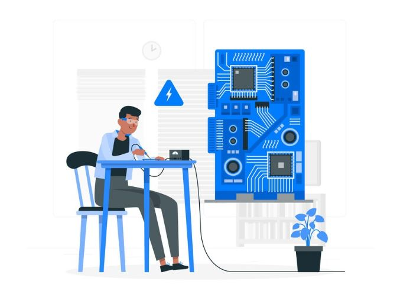

O arduino é uma ferramenta ou um sistema que pode ser usa em mecanica e outras diversas coisas

O Arduino é tipo um "kit" de eletrônica super legal e fácil de usar. Com ele, você pode inventar desde coisas simples, como luzes piscando, até projetos mais complexos, como robôs ou sistemas de automação. Ele é bem popular por ser acessível e ter uma comunidade cheia de ideias e suporte. Se você curte tecnologia e quer se divertir criando suas próprias coisas, o Arduino é uma ótima opção para começar!
Comandos simples
-pinMode ( ) O comando pinMode () é responsável por atribuir uma funcionalidade ao pino do Arduino.
-digitalRead ( ) Esse comando é responsável por ler o estado de porta digital que está trabalhando como entrada (INPUT), identificando se o dispositivo conectado a ela está enviando um sinal em nível lógico